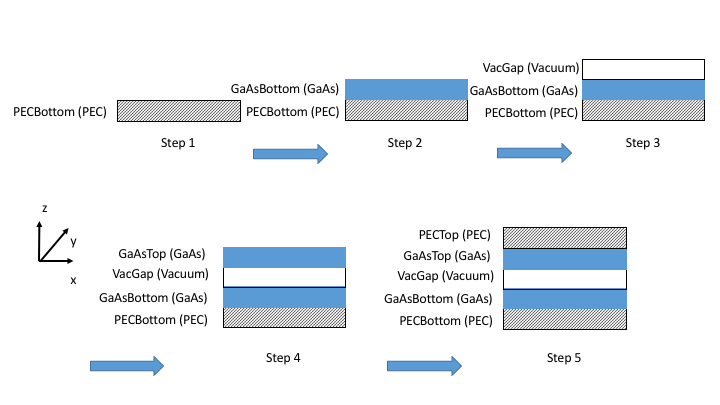

Tutorial Example
This is an detailed tutorial on the near-field heat transfer between two GaAs slabs backed with PEC.
0. Initialize simulation object¶
First, to initialize the planar simulation, one should do
s = SimulationPlanar.new()
1. Read input material files¶
First, one should add materials to the system, and the materials are initialized by the input files.
s:AddMaterial("GaAs", "GaAs.txt") s:AddMaterial("PEC", "PEC.txt") s:AddMaterial("Vacuum", "Vacuum.txt")
Here we initialize three materials GaAs, PEC and Vacuum, and their dielectric constants are contained in the files GaAs.txt, PEC.txt and Vacuum.txt, respectively. Here is a glance at the top few lines of GaAs.txt file:
2.126978e+15 1.306099e+01 1.228760e-02
2.131253e+15 1.307147e+01 2.845717e-02
2.135527e+15 1.308195e+01 4.462674e-02
2.139802e+15 1.309243e+01 6.079631e-02
2.144077e+15 1.310291e+01 7.696587e-02
... ... ...
where the data is specified in fashion, separated by tab, with in total rows. All material files should contain the dielectric function at the same omega values. For PEC, one needs to use a very large value for it be to reflective, and Vacuum needs to have a very small imaginary part (here ) to maintain numerical stability. In addition, make sure that all the .txt files are the in the same directory as the .lua script.
2. Add layers to the system¶
s:AddLayer("PECBottom", 0, "PEC"); s:AddLayer("GaAsBottom", 1e-6, "GaAs"); s:AddLayer("VacGap", 1e-8, "Vacuum"); s:AddLayerCopy("GaAsTop", "GaAsBottom"); s:AddLayerCopy("PECTop", "PECBottom");
Here there are in total layers that has been added to the system: PECBottom, GaAsBottom, VacGap, GaAsTop and PECTop. Different from S4, here the layers are built from bottom to the top, with the bottom most and top most layers being semi-infinite (set thickness to here). The following is a drawing illustrating how the layers are added to the system:

3. Set source and probe, as well as options¶
s:SetSourceLayer("GaAsBottom"); s:SetProbeLayer("VacGap"); s:OptUseQuadgk(); s:SetKParallelIntegral(10); s:SetThread(4);
In this case, since we are simulating the heat transfer between the two GaAs layers, we set the layer GaAsBottom as the source layer, and VacGap to be the probe layer where Poynting vector is measured. Here, one needs to ensure that the source layer is always below the probe layer in the system. The following figure is an illustration after the source and probe layers are set.

4. Build simulation and perform integration¶
Now, with the system built up and the integral set up, one can build RCWA matrices and perform integration over .
s:BuildRCWA(); s:IntegrateKParallel();
5. Print results¶
phi = s:GetPhi(); omega = s:GetOmega(); for i = 1,s:GetNumOfOmega(), 1 do print(string.format("%e", omega[i]).."\t"..string.format("%e", phi[i])); end
The above is a simple way to retrieve the result and print it to the screen. One can also use Lua built-in i/o functions to output result into files.
Now save this file as main.lua, and one can simply type
mesh main.lua
to run the simulation.